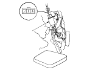
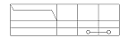

Clutch Pedal Position Switch Test
Disconnect the 3P connector from the clutch pedal position switch (A).

Check for continuity between the terminals according to the table.
If the continuity is not as specified, replace the clutch pedal position switch.
If OK,
install the clutch pedal position switch and adjust the pedal height.
